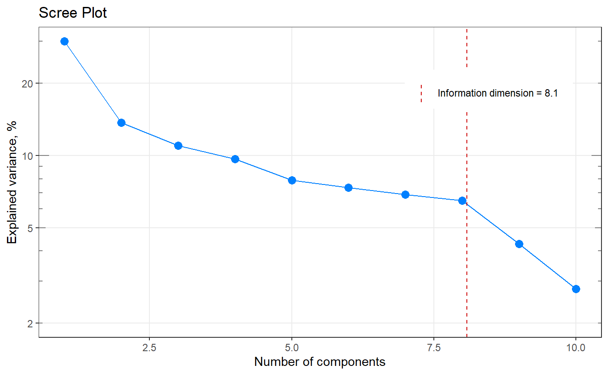

infoDim.RdThe function calculates a measure, called "information dimension".
infoDim(Matrix)
| Matrix | A matrix with data (rows = observations, columns = variables). |
|---|
A list (classes "list" and "infoDim") with fields:
Information dimension, rounded towards positive infinitive;
Information dimension (fractional, not rounded);
A vector of eigenvalues, normalized by sum of eigenvalues, which can be used to determine the importance of (principal) components;
A vector of eigenvalues;
A vector with integers from 1 to length(eigenvalues).
[1] R. Cangelosi and A. Goriely, Component retention in principal component analysis with application to cDNA microarray data. Biol Direct, 2, 2 (2007), http://dx.doi.org/10.1186/1745-6150-2-2
Other information dimension functions:
qplot_infoDim()
Other component analysis / factorisation related functions in spHelper:
getScores(),
plot_spDiff(),
qplot_infoDim(),
qplot_kAmp(),
qplot_kSp(),
qplot_spc(),
reconstructSp(),
sortLoadings(),
unipeak(),
whichOutlier()
my_matrix <- matrix(rexp(200, rate=.1), ncol=20) my_result <- infoDim(my_matrix) # Investigate the result str(my_result)#> List of 5 #> $ dim : num 9 #> $ exactDim : num 8.09 #> $ explained : num [1:10] 0.2997 0.1373 0.1102 0.0966 0.0788 ... #> $ eigenvalues: num [1:10] 135 61.9 49.6 43.5 35.5 ... #> $ n.comp : int [1:10] 1 2 3 4 5 6 7 8 9 10 #> - attr(*, "class")= chr [1:2] "list" "infoDim"my_result$exactDim#> [1] 8.085524my_result$dim#> [1] 9